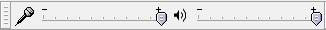

Record
To record:
- Set the Recording Device,
- monitor and then adjust the recording level,
- then press the Record
 button.
button. Correct adjustment of level before recording is essential to avoid noise or distortion.
If you are having problems recording, have a look at the FAQ on recording which answers some frequently asked questions.
| When making recordings, particular critical recordings, you should consider shutting down all other applications giving Audacity sole use of the computer. This can help to avoid skips, small dropouts, and ticks in your recordings.
And on Mac that means fully Quitting them not just closing them, as otherwise Mac will leave them open consuming computer resources.
|
- Set the Recording Device either in the Devices section of Preferences or in Device Toolbar.
- Click in the Recording Meter to start monitoring as in the following image:
- Singing or playing the loudest part of what you are recording, adjust the recording level using the right-hand slider on Mixer Toolbar:
- 
- Optionally, turn on (so it has a check mark) to hear what the recording will sound like.

Do not enable Software Playthrough when recording computer playback because it creates echoes and feedback. To hear what a recording of computer playback will sound like, make a test recording to check the level before recording for real. - Press the Record button to record for real.
- Audacity will record until you stop the recording using the Stop
 button.
button.
More help at:
- Basic Recording, Editing and Exporting - more getting-started information
- Recording a detailed description of various ways of controlling recording in Audacity
- Tutorial - Your First Recording for recording microphones, guitar or keyboard
- Tutorial - Copying tapes, LPs or MiniDiscs to CD
- Troubleshooting Recordings: Frequently Asked Questions
- Recording Tips on the Wiki